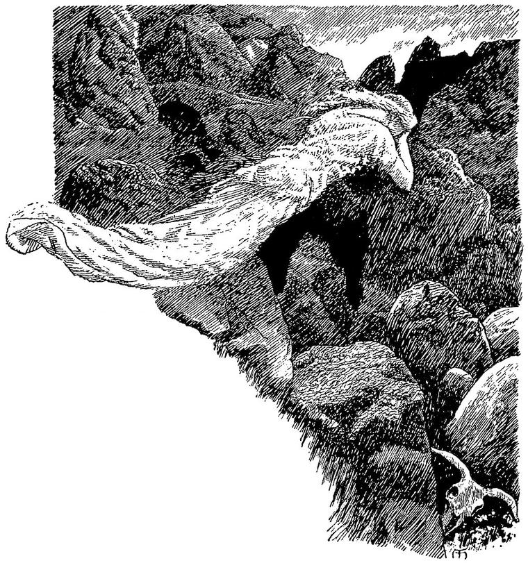

Hems not Ceres’ daughter in its flow;
But she grasps the apple—ever holdeth
Her, sad Orcus, down below.”
SCHILLER, Das Ideal und das Leben.
Ever as I sang, the veil was uplifted; ever as I sang, the signs of life grew; till, when the eyes dawned upon me, it was with that sunrise of splendour which my feeble song attempted to re-imbody.
The wonder is, that I was not altogether overcome, but was able to complete my song as the unseen veil continued to rise. This ability came solely from the state of mental elevation in which I found myself. Only because uplifted in song, was I able to endure the blaze of the dawn. But I cannot tell whether she looked more of statue or more of woman; she seemed removed into that region of phantasy where all is intensely vivid, but nothing clearly defined. At last, as I sang of her descending hair, the glow of soul faded away, like a dying sunset. A lamp within had been extinguished, and the house of life shone blank in a winter morn. She was a statue once more—but visible, and that was much gained. Yet the revulsion from hope and fruition was such, that, unable to restrain myself, I sprang to her, and, in defiance of the law of the place, flung my arms around her, as if I would tear her from the grasp of a visible Death, and lifted her from the pedestal down to my heart. But no sooner had her feet ceased to be in contact with the black pedestal, than she shuddered and trembled all over; then, writhing from my arms, before I could tighten their hold, she sprang into the corridor, with the reproachful cry, “You should not have touched me!” darted behind one of the exterior pillars of the circle, and disappeared. I followed almost as fast; but ere I could reach the pillar, the sound of a closing door, the saddest of all sounds sometimes, fell on my ear; and, arriving at the spot where she had vanished, I saw, lighted by a pale yellow lamp which hung above it, a heavy, rough door, altogether unlike any others I had seen in the palace; for they were all of ebony, or ivory, or covered with silver-plates, or of some odorous wood, and very ornate; whereas this seemed of old oak, with heavy nails and iron studs. Notwithstanding the precipitation of my pursuit, I could not help reading, in silver letters beneath the lamp: “No one enters here without the leave of the Queen.” But what was the Queen to me, when I followed my white lady? I dashed the door to the wall and sprang through. Lo! I stood on a waste windy hill. Great stones like tombstones stood all about me. No door, no palace was to be seen. A white figure gleamed past me, wringing her hands, and crying, “Ah! you should have sung to me; you should have sung to me!” and disappeared behind one of the stones. I followed. A cold gust of wind met me from behind the stone; and when I looked, I saw nothing but a great hole in the earth, into which I could find no way of entering. Had she fallen in? I could not tell. I must wait for the daylight. I sat down and wept, for there was no help.
